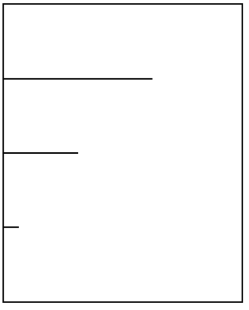

Write a function that draws horizontal lines on the graphics canvas. If a line is horizontal,
then the y-values for the endpoints are the same. The parameters to your function should be
the y location, and the length, and all of your lines should start at x position 0.
編寫一個函數，繪製圖形畫布上的水平線。如果行是水平的，則y值的端點是相同的。的參數的函數應該是y位置，
長度，和所有的行應該開始，在x0的位置。
For example if you call:
horizontalLine(100, 200);
you should get a horizontal line of length 200 starting at position (0, 100).
If your start function looks like:
function start(){
horizontalLine(100, 200);
horizontalLine(200, 100);
horizontalLine(300, 20);
}
your canvas should look like:
例如，如果你調用：
水平線(100, 200);
你應該得到一個水平線長度200的起始位置（0，100）。
如果你的啟動功能是這樣的：
函數的開始（）{
水平線(100, 200);
水平線(200, 100);
水平線(300, 20);
}
你的畫布應該像這樣：
